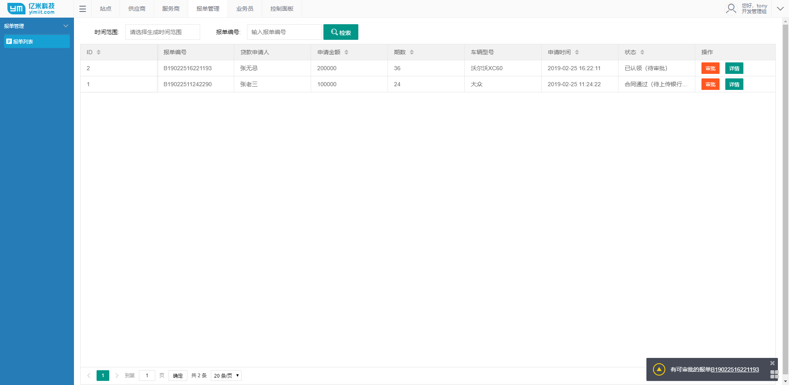

自从知道Redis之后，近两年几乎所有的项目都会用到，而且Redis也确实非常好用！。
最近在各类公众号文章上发现关于Redis技术迭代和落地到具体项目的内容越来越多，自己最近也是小有所悟，总结一下，希望各位大神指教。
大家都知道，Redis是一个非关系型的，key-value数据库，高效，简单，支持多种数据类型，string(字符串),list(列表),hash(哈希),set(集合),zset(有序集合)，为了保证效率，数据都是缓存在内存中。
而且Redis还会周期性的把更新的数据写入磁盘或者把修改操作写入追加的记录文件，所以Redis支持持久化存储，并且在此基础上实现了master-slave(主从)同步。
对外Redis还提供的多种开发语言的接口，包括今天我们所要说的C#语言，值得一提的是，它还支持JavaScript！
刚了解到Redis的时候，参照前人的例子，简单写过一个类函数，在项目中几乎就把Redis当成了一个公共哈希表来用，用法简单，适用的场景也很少，但也确实能实在的解决很多问题，比如服务端的Session共享问题
这段只用到Redis初级功能的代码如下(依赖StackExchange所做的封装,StackExchange是.net环境下一款免费，开源的Redis操作包，是当前.net使用访问Redis的主流类库)
1 | public class RedisHelper |
用起来也十分简单，比如我要缓存某个用户的登录信息时
1 | RedisHelper.Set<string>("session_key" + loginCode, session_key, DateTime.Now.AddMinutes(10) - DateTime.Now); |
读取的时候
1 | string session_key = RedisHelper.Get<string>("session_key" + loginCode); |
只需保证键值唯一就好，用起来就像使用哈希表或字典那样简单；
但是近期，我遇到了一个稍微复杂一点的需求，单纯的依靠上面这个类是难以实现的，而如果不借助Redis，效率又会很差（目前能力范围内~~），所以还是决定使用Redis
先简单描述一下需求
有一堆报单审批表，每个报单有多个审批流程，涉及到客户和服务人员的交互操作，而每个报单都有其对应的审批人员，报单不能同时被两个审批人员审批，特殊管理人员除外，
需要做的是要在每次审批人员登录系统的时候，会有提示，告诉审批人员哪些报单是可以现在审批的，说白了就是省去审批人员每次都要挨个去查哪些报单是他审批的，他审批的报单里哪些又有新的动态。
那么这个问题怎么来解决呢，相信各位会有很多非常优秀的方案，这篇讲Redis，我就分享一下我的解决办法
首先稍微改造下上面那个类，关于初始化Redis链接的部分代码
1 | private static readonly string ConnectionString; |
然后再来封装一些具体的操作，之前的那些简单的存取就不介绍了，我在这个问题中只用到了hash，而集合，列表与之类似，这里只说一下关于hash的操作，因为几乎囊括了原生Redis关于hash的所有操作，包括，单条存值，
多条存值，key,移除，且所有方法都有对应的异步方法，所以这段代码会比较长
1 | #region Hash 操作 |
至此，完成上述需求的基础铺垫就完成了，应用的时候，我们只要再返回报单列表的时候，同时返回一个当前保单列表和缓存中存在的列表的差异列表就行了，
而当审批人员有新的审批修改之后，也需要同时修改缓存中的列表，具体的方法如下
1 | /// <summary> |
好了，返回列表和审批的函数，我就不贴码了，至此我们要做的后端的工作就完成了，
配合前台的提醒插件spop
1 | if (res.explist) { |
工作就完成了~，其实后面实现需求的代码并不重要，因为你遇到的实际问题可能有很多种，而解决问题的关键就在于前面的铺垫，还是那句话，关于Redis的介绍这里只是冰山一角，如果您是没有接触过，或者初识Redis的同学
还是需要先去了解一下Redis的基本概念和简单操作，实际操作一下，非常有利于对Redis的理解，然后再在实际项目中应用的时候会事半功倍！（
）而关于Redis的基本教程，菜鸟教程上的内容我觉得还是非常不错的(http://www.runoob.com/redis/redis-tutorial.html)）
最后贴几张项目的图吧
